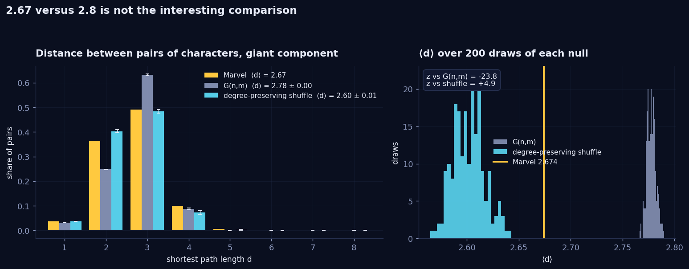
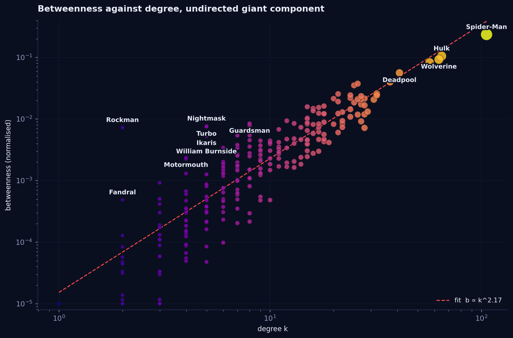
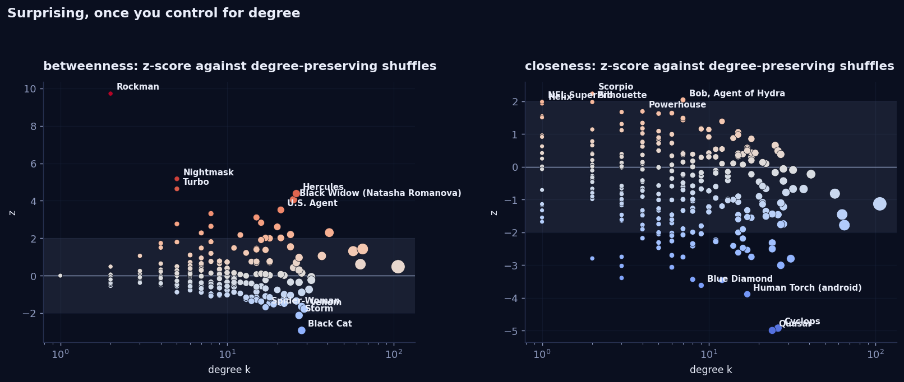
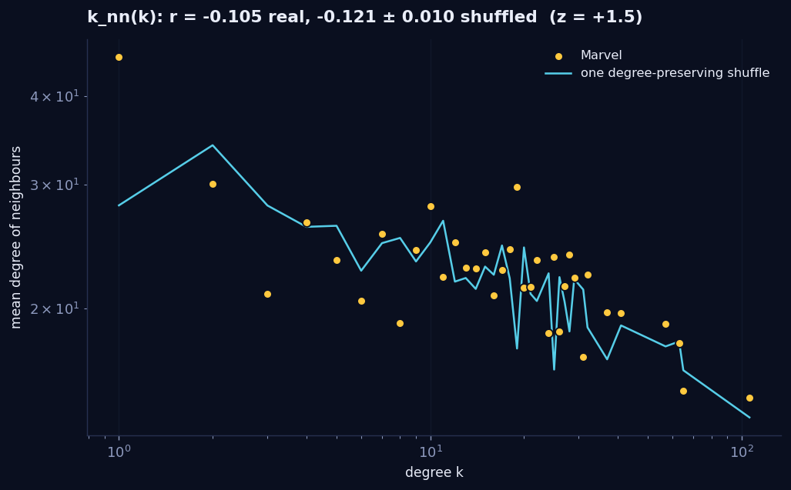
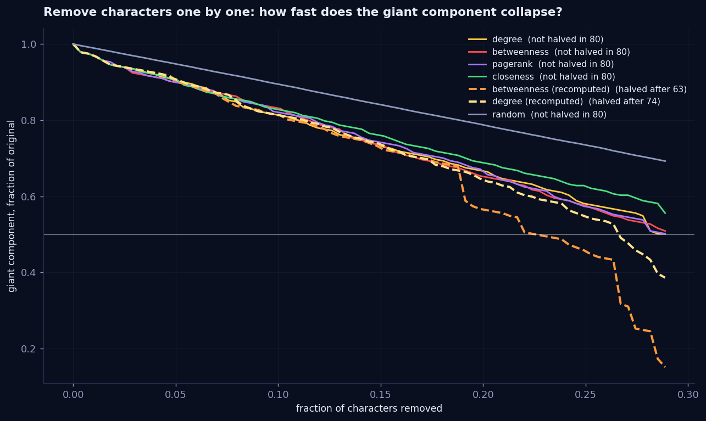

Compared to what?
The assignment hands you two numbers. The Marvel network has an average distance of 2.67; a random network with the same size and the same number of links has 2.8. Is that evidence of anything? It is not, and working out why turned into the theme of the whole week: every "who matters" question has a "compared to what" hiding inside it, and the answer changes completely depending on which null model you pick.
The trap in two numbers
Three things are wrong with reading anything into 2.67 versus 2.8.
Distance is almost entirely fixed by n and ⟨k⟩. In any network without a lattice-like structure, paths grow like ln n / ln ⟨k⟩. With 303 nodes and ⟨k⟩ = 9.5 that is 2.54. Everything connected with these numbers lands somewhere between 2.5 and 2.9. The Marvel value says the network is not a ring. We knew.
The two numbers are not measured on the same thing. 2.67 is the giant component, 277 characters. A G(n,m) network with ⟨k⟩ = 9.5 has no isolates at all, so its 2.8 is measured on 303. Bigger network, slightly longer paths. Part of the gap is just that.
G(n,m) is the wrong null for the question. We drew 200 of them: ⟨d⟩ = 2.778 ± 0.004. The spread is so tight that the real network sits 24 standard deviations away. Significant, technically, and it proves exactly one thing: the degree distribution is not Poisson. That is a week 1 result. Spider-Man's 106 links are shortcuts, and G(n,m) has never heard of him.

So we asked the question the right way. Keep every character's degree exactly as it is, rewire the links at random, repeat 200 times. That null knows about Spider-Man. It gives ⟨d⟩ = 2.602 ± 0.015, and the real network at 2.674 sits 4.9 standard deviations above it. The real network is longer than its own hubs predict, not shorter.
| Network | nodes | ⟨d⟩ | z of real | clustering C |
|---|---|---|---|---|
| Marvel, giant component | 277 | 2.674 | 0.320 | |
| G(n,m), 200 draws | 303 | 2.778 ± 0.004 | −23.8 | 0.031 |
| Degree-preserving shuffle, 200 draws | 277 | 2.602 ± 0.015 | +4.9 | |
| ln n / ln ⟨k⟩ | 2.54 |
That is a finding, and it has a cause. The real network spends links on triangles: clustering is 0.32, ten times the 0.03 a random network manages. X-Men link to X-Men, Avengers to Avengers. A link inside a clique is a link not spent on a shortcut across the network, so paths get slightly longer. Community structure costs distance.
The distance on its own is evidence of nothing. The pair is: distance like a random network, clustering ten times a random network. That is the small-world signature, and clustering is the half doing the work. If you want to read ⟨d⟩ at all, compare it to shuffles with the same degree sequence and report the spread, not one number against another.
For the record: diameter 6, radius 3, centre Spider-Man, and 85.7 percent of all pairs sit at distance 2 or 3. Our hand-written breadth-first search agrees with networkx on all 20 random sources we checked.
Keep the arrows and everything gets further away
Undirected, 277 characters are mutually reachable. Directed, the largest strongly connected component holds 229, only 68.8 percent of ordered pairs can reach each other at all, and the mean distance over pairs that can is 3.43 instead of 2.67. There are 171 links whose return trip takes five or more hops, and for 124 of them there is no return trip. Blue Diamond links to Human Torch, Jeffrey Mace, Whizzer and six more of his Liberty Legion teammates from 1942. Not one of them links back. d = 1 one way, d = ∞ the other, and the reason is on his page: he is a footnote in their histories, they are the whole of his.
Who matters, four ways
Degree, closeness, harmonic centrality and betweenness on the undirected giant component. The top of every list looks the same: seven characters are in all four top tens, and Spider-Man leads all four. He has 106 links, a closeness of 0.595 (mean distance to everyone else of 1.68), and 23 percent of all shortest paths in the network pass through him.
| # | Degree | k | Closeness | c | Betweenness | b |
|---|---|---|---|---|---|---|
| 1 | Spider-Man | 106 | Spider-Man | 0.595 | Spider-Man | 0.235 |
| 2 | Hulk | 65 | Hulk | 0.526 | Hulk | 0.105 |
| 3 | Wolverine | 63 | Wolverine | 0.524 | Wolverine | 0.093 |
| 4 | Doctor Strange | 57 | Doctor Strange | 0.517 | Doctor Strange | 0.083 |
| 5 | Deadpool | 41 | Deadpool | 0.494 | Deadpool | 0.056 |
| 6 | She-Hulk | 37 | She-Hulk | 0.482 | She-Hulk | 0.040 |
| 7 | Phoenix Force | 32 | Scarlet Witch | 0.475 | Hercules | 0.037 |
| 8 | Scarlet Witch | 32 | Phoenix Force | 0.471 | Black Widow | 0.035 |
| 9 | Black Panther | 31 | Moon Knight | 0.469 | Phoenix Force | 0.026 |
| 10 | Venom | 29 | Adam Warlock | 0.467 | U.S. Agent | 0.026 |
The interesting rows are the ones where the lists disagree. Hercules is 20th by degree and 7th by betweenness. Black Widow is 23rd by degree and 8th by betweenness. Their links go to places that otherwise barely touch: Hercules connects the pantheon (Ares, Balder the Brave, the Eternal Ajak) to the Avengers and the Hulk; Black Widow connects the 1940s (Blue Eagle, the android Human Torch), the street (Hawkeye, Deadpool), the cosmic (Adam Warlock) and the Ultimate universe. Neither is a hub. Both are bridges.

Rockman is the purest case in the network. He has exactly two links: Black Widow, and a character called The Witness. The Witness has exactly one link: Rockman. So every shortest path from anyone in the universe to The Witness passes through Rockman, and a character nobody has heard of, with two links, ranks 59th of 277 on betweenness, above 218 characters with more links than him. That is not a quirk of the measure. That is what the measure is for.
Direction flips the top of the list
Recompute betweenness on the directed network and Spider-Man drops from first to seventh; Hercules takes first place. The reason is the number from week 1: Spider-Man has 106 links in and 9 out. Paths run into him constantly and almost never through him, because there are only nine ways to leave. Betweenness on a directed graph rewards characters who are both arrived at and departed from, and the most famous character in the network is a cul-de-sac. The biggest individual moves were G. W. Bridge (238th undirected to 77th directed) and Paladin (132nd to 23rd), both characters whose pages link out to people who link back to them.
PageRank versus in-degree
Five of the ten characters in the PageRank top ten are also in the in-degree top ten, and five are not. The five that PageRank promotes are Black Cat, Mayday Parker, Venom, Phoenix Force and Jean Grey. The five it demotes are She-Hulk, Scarlet Witch, Black Panther, Cyclops and Luke Cage.
The mechanism is Spider-Man, again. His PageRank is 0.050, three times anyone else's, and he links out to only nine pages. Each of those nine inherits 0.85 × 0.050 / 9 ≈ 0.0047 from him alone, which is more than most characters' entire score. Black Cat and Mayday Parker are in the top ten because Spider-Man vouches for them and vouches for almost nobody else. She-Hulk and Luke Cage, by contrast, collect their 29 and 25 in-links from characters whose own rank is low. PageRank is in-degree weighted by who is doing the pointing, divided by how many other people they point at.
Our own power-iteration PageRank agrees with networkx to better than 10−9 for α = 0.5, 0.85 and 0.95. The one design decision that matters is the 20 characters with no outgoing links at all: without special handling their score drains out of the system every iteration. We do what networkx does and hand their entire score back to every node uniformly, as if a reader stuck on a dead-end page picks a random new one.
Compared to what: the shuffle test
This is the part we came for. For every character, we compare their real betweenness to the distribution they get across 200 networks with the same degree sequence and random wiring, and report the z-score. A high z means "more of a broker than your number of links can explain".

| Character | links | betweenness | expected from degree | z | what they bridge |
|---|---|---|---|---|---|
| Rockman | 2 | 0.0072 | 0.0001 ± 0.0007 | +9.7 | The only door to The Witness |
| Nightmask | 5 | 0.0077 | 0.0009 ± 0.0013 | +5.2 | The New Universe (Star Brand, Justice) to the main body |
| Turbo | 5 | 0.0075 | 0.0009 ± 0.0014 | +4.6 | Darkhawk, Nova and Rom to a one-link character, Redneck |
| Hercules | 26 | 0.0374 | 0.0177 ± 0.0045 | +4.4 | Olympus, Asgard and the Eternals to the Avengers |
| Black Widow | 25 | 0.0351 | 0.0169 ± 0.0045 | +4.1 | Four decades of Marvel to each other |
| U.S. Agent | 21 | 0.0255 | 0.0118 ± 0.0039 | +3.5 | Captain America's circle, the West Coast Avengers and the 1940s Invaders |
| Spider-Man | 106 | 0.2349 | 0.2305 ± 0.0094 | +0.5 | Nothing his degree does not already explain |
| Black Cat | 28 | 0.0071 | 0.0201 ± 0.0044 | −2.9 | Nothing: all 28 links stay inside Spider-Man's neighbourhood |
Spider-Man is the most central character by every raw measure and the 58th most surprising. His betweenness of 0.235 is what the shuffles give a character with 106 links: 0.231 ± 0.009. The network's biggest broker is not a broker at all in the sense that matters. He is a hub, and hubs sit on paths because paths have nowhere else to go.
Closeness tells a different kind of story. Its z-scores never get extreme: the largest in magnitude is 5, against 9.7 for betweenness. That is built into the measure. Closeness averages your distance to all 276 other characters, and no single link can move an average of 276 numbers very far. Betweenness can be dominated entirely by one bridge, which is exactly what Rockman is. Where closeness does deviate, it deviates for whole groups at once: Quasar (z = −5.0) and Cyclops (z = −4.9) have 24 and 26 links, but nearly all of them point into one tight cluster, the cosmic characters and the X-Men respectively, so they are further from everybody else than their degree suggests. The same clustering that lengthened the average distance in the first section shows up here, one character at a time.
Do the important stick together?
Degree assortativity is r = −0.105: slightly disassortative, high-degree characters link to low-degree ones a little more than to each other. But the degree-preserving shuffles give r = −0.121 ± 0.010. The real network is if anything less disassortative than its degree sequence forces it to be, z = +1.5, not significant. The negative sign is structural: with one node holding 106 of 1434 links in a 277-node network, there simply are not enough other hubs for Spider-Man to link to, so most of his links must go to ordinary characters whatever the wiring. Newman's result, in miniature.

With arrows kept, the picture sharpens. The out-degree of a link's source correlates with the out-degree of its target at 0.107, and the in-degree of the source with the out-degree of the target at 0.100. The out-degree of the source against the in-degree of the target is −0.023. So pages that link a lot link to other pages that link a lot, heavy linkers are a club, while the famous get linked to by everybody regardless. Attention flows to the famous from everywhere; curation is exchanged among the curators.
Cliques
893 maximal cliques, and the clique number is 8. There are six 8-cliques and they are all the same team: every one contains Betsy Braddock, Cyclops, Emma Frost, Jean Grey, Rachel Summers and Wolverine, plus two of Cable, Jubilee, Northstar, Phoenix Force and Storm. The X-Men are the densest object in the universe, and the six-person core is the X-Men's own core cast. An 8-clique needs every member to have at least 7 links, which rules out 134 of the 277 characters before computing anything. 1835 triangles in total.
So we took it apart
The week's opener asked which single character's removal fragments the network the most, and whether that is the same character as the one with the highest betweenness. The answer to both is Spider-Man, and the answer is underwhelming: removing him alone cuts off five characters out of 277. Removing Hulk cuts off none. Removing the top four together cuts off eight. So we asked the better question: remove characters one after another, in the order a measure recommends, and watch how fast the giant component collapses. That is DISMANTLE, and the summary curve is below.

Three things we did not expect.
- The network is hard to break. Remove the 80 highest-degree characters, every hub in the network, and 139 of the 197 characters left are still in one piece, half the original giant component. Random removal barely dents it. With ⟨k⟩ = 9.5 and clustering of 0.32 there is redundancy everywhere: cut the hub and its neighbours still know each other.
- The four static orders are the same order. Degree, betweenness, PageRank and closeness agree on 17 of the first 20 removals and their curves lie on top of each other. Once again, most of what any centrality measures is degree.
- Recomputing is the whole game. Re-rank betweenness after every removal and the curve tracks the static one for 50 steps, then falls off a cliff: it halves the network at removal 63 and has it down to 15 percent by 80. After the hubs are gone, the brokers of the remaining network are different characters from the brokers of the original one, and only the adaptive order finds them. Static betweenness is a snapshot of a network that no longer exists.
The robustness index R, the area under each curve, orders them: random 0.248, closeness 0.225, degree 0.219, betweenness 0.218, recomputed degree 0.215, recomputed betweenness 0.203. Lower is a more effective attack.
What surprised us
- The real network is longer than its hubs predict, not shorter. We had the sign wrong in our heads before we ran the right null.
- Rockman. Two links, 59th on betweenness, z of 9.7. A textbook bridge, in a network none of us had read closely enough to know he existed.
- Spider-Man is unsurprising. First by every measure, 58th by surprise. Everything about his centrality is degree.
- Hercules leads directed betweenness. Spider-Man is seventh, because nine outgoing links make him a place paths end, not a place they pass.
- Eighty removals do not halve the network unless you re-rank as you go.
Reproduce it
python scripts/week3.py # every figure and number above, about six minutes
# (400 degree-preserving shuffles dominate)All quoted numbers are written to data/week3.json. The removal orders the explorable animates are in
data/week3_dismantle.js, computed by the same script. The hand-written BFS and PageRank are in
scripts/week3.py as my_bfs and my_pagerank, with their validation against
networkx in the output.